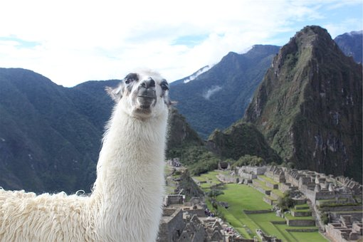

马丘比丘(Machu Pichu )
又称失落的印加城市
-
整个遗址高耸在海拔约2350米的山脊上，俯瞰着乌鲁班巴河谷，为热带丛林所包围，也是世界新七大奇迹之一。
由于独特的位置、地理特点和发现时间较晚，马丘比丘成了印加帝国最为人所熟悉的标志。
在1983年，马丘比丘被联合国教科文组织定为世界遗产，是世界上为数不多的文化与自然双重遗产之一。
茶卡盐湖一年四季美景连连，春日里低悬于天际的白云落在湖水里，分不清是盐更白还是云更白
马丘比丘是南美洲最重要的考古发掘中心，也因此是秘鲁最受欢迎的旅游景点。
-

- 
-
智利诗人巴勃罗·聂鲁达最著名的作品，受马丘比丘启发的"马丘比丘之巅":
"我看见石砌的古老建筑物镶嵌在青翠的安第斯高峰之间。激流自风雨侵蚀了几百年的城堡奔腾下泄……"
("Machu Picchu es un viaje a la serenidad del alma, a la eterna fusión con el cosmos, allí sentimos nuestra fragilidad.
Es una de las maravillas más grandes de Sudamérica. Un reposar de mariposas en el epicentro del gran círculo de la vida.
Otro milagro más")
更多资料
the more

在1981年，马丘比丘周围32592公顷土地被列为秘鲁的"历史保护区"。
这个地区不仅包括遗迹本身，还包括附近的地貌和动植物群，尤其是当地生产的兰花。
有理论指出马丘比丘是一个印加"llacta"--即用来控制新征服地区经济的据点。
这里也是整个印加帝国境内最美丽的一处"据点"，在遭受进攻时用来保护印加贵族。
这里是Zapa印加的"安息地"和"观测站"。在被西班牙征服后，这里成了Manco印加反抗军的要塞